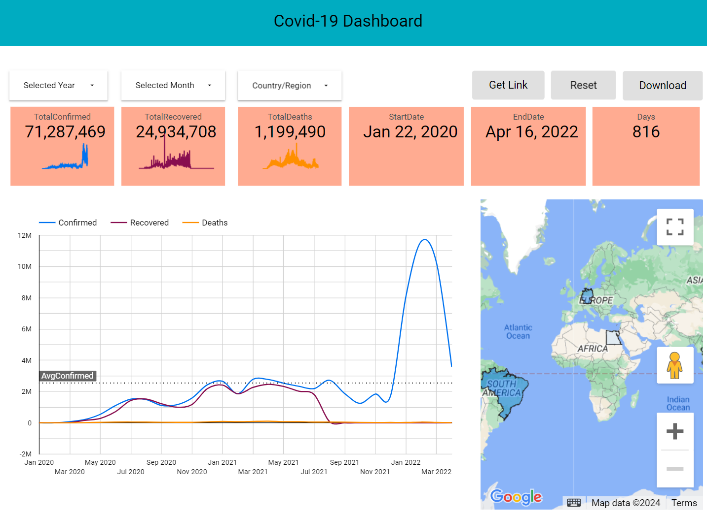
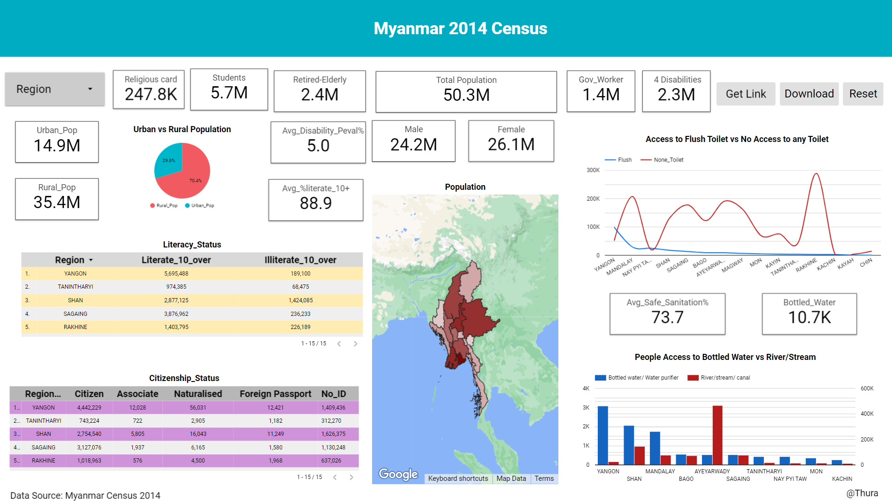
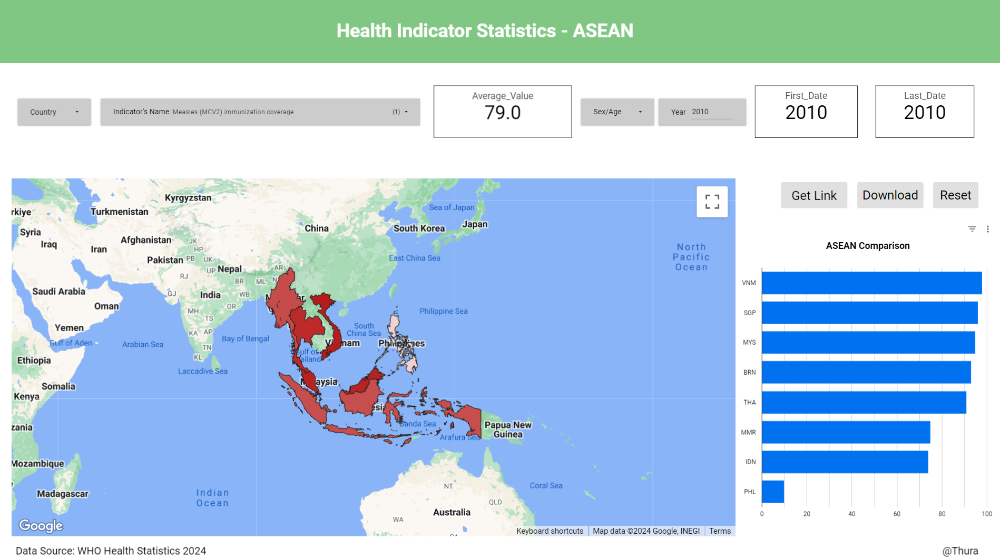
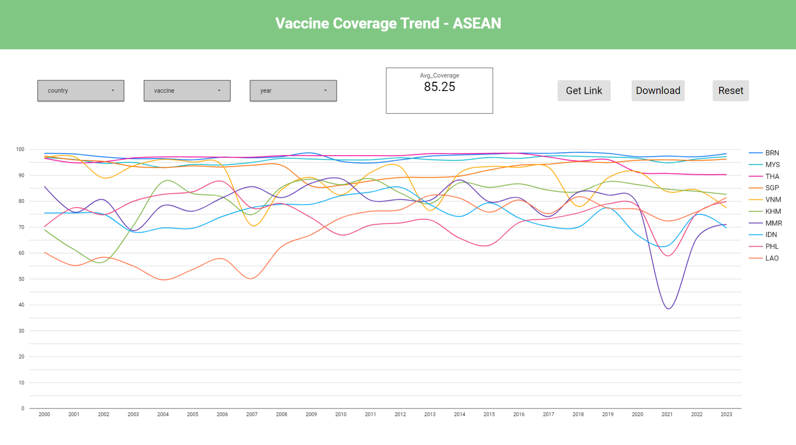
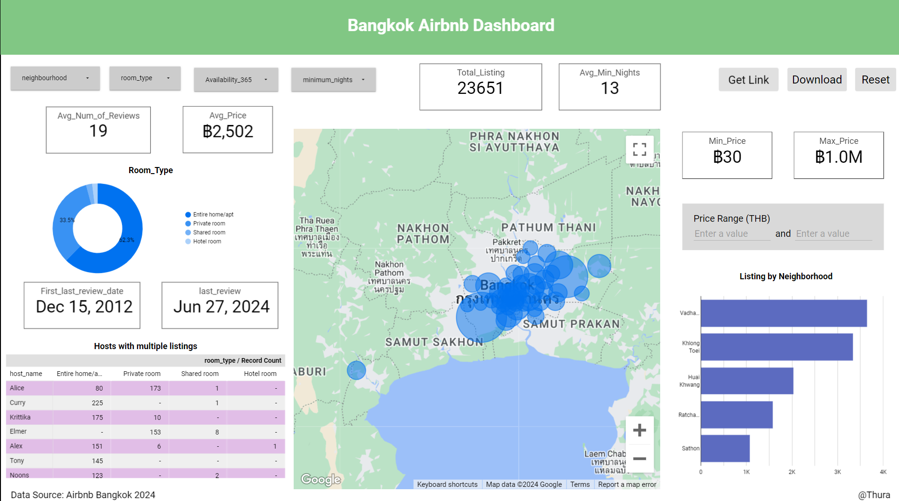

What You’ll Find Here
- Purpose The purpose of this website is to propagate the concepts of data dashboards and data analysis. It is also a platform where I can share my the data dashboards and step-by-step analysis of projects with R with you.
- About Author: Learn more about the author's education, experiences, skills, and short bio behind the author's passion for health informatics and public health.
- Dashboard Dive into the published dashboards where you can interact and gain insights. Each dashboard represents the significance of data dashboard in providing data-driven insights.
- R-Markdown Dive into the published R-markdown where you can see step-by-step data analysis including importing, cleaning, and preparing data, statistical analysis, plotting using R and various useful R Packages.
- Health Education Stay informed and Learn more health conditions as well as tropical diseases that are prevelance among the population or emerging in the area.
Thank you for visiting, and I hope you find inspiration and insight. Whether you’re interested in collaborating, learning more about my work, or just want to connect, I’d love to hear from you. Enjoy exploring!
About Author
Dr. Aung Thura Htoo - MD, Bs HS, MSc BHI candidate
Skills
R
SQL
Power BI
Dashboard
Analysis
Database
Health Informatics
Looker Studio
Statistics
Education
Bachelor of Health Science (2022-2024)
University of the People
CGPA - 3.78/4 (Magna Cum Laude)
Bachelor of Medicine, Bachelor of Surgery (MBBS)
University of Medicine, Mandalay
Grade B
Master of Science Candidate in Biomedical and Health Informatics (2024-Present)
Mahidol University
Experience
Academic Manager (Medical)
Burma Academy (2022-2024)
Medical Practitioner
IDP Camps & Border Areas (2020-2022)
Freelance Data Analyst
3+ Years of Experience
Choose a Dashboard

An overview of the COVID-19 pandemic's impact, cases, and vaccination data.

Detailed statistics and demographic data from Myanmar's 2014 census.

Health indicators and statistics across ASEAN countries for 2024.

Vaccine coverage data for ASEAN countries, with a focus on UNICEF efforts.

Insights into Airbnb listings, prices, and trends in Bangkok for 2024.
Sample text for Dashboard 6.
COVID 19 Dashboard
This dashboard provides insights from COVID-19 data from eight countries: Thailand, Mexico, Japan, Germany, Egypt, Brazil, highlighting the number of confirmed cases, recovered cases, deaths from 22 January 2020 to 16 April 2022. Combination of timeseries chart and score card can ensure better visibility of the trends with number.
Myanmar Census 2014 Dashboard
This dashboard provides insights from the Myanmar Census 2014, highlighting key demographic, literacy, citizenship, sanitation, and relevant population data across the country. Use the interactive tools below to explore the data and gain a deeper understanding of the population distribution and trends in each region. The source of data can be found in this link: https://www.dop.gov.mm/en/data-and-maps-category/2014-census-data.
Bangkok Airbnb Dashboard
This dashboard provides insights from listing dataset of Airbnb - Bangkok, highlighting the distribution of room types, availability for rentals, hosts with multiple listings, and average price in each neighborhood. The dataset contains 23651 observations and 18 variables. One can check the availability and minimum nights as well as the price range in each neighborhood for each room type for the rental. The source of data can be found in this link: https://insideairbnb.com/get-the-data/.
Health Indicator ASEAN Dashboard
This dashboard provides insights on the health indicators and the comparison among ASEAN countries: Brunei, Cambodia, Indonesia, Loas, Malaysia, Myanmar, Philippines, Singapore, Thailand, and Viet Nam. A total of 56 indicators were included in this dashboard, displaying their average number, first and last date of the collected data. The audience can choose indicators, country, year, as well as sex or age group of their interest. The data source is from https://www.who.int/data/gho/publications/world-health-statistics, https://data.who.int/countries/104, or https://www.who.int/data/gho.
Vaccine Coverage ASEAN Dashboard
These dashboards provide insights on the coverage of 14 different vaccines and the comparison among ASEAN countries: Brunei, Cambodia, Indonesia, Loas, Malaysia, Myanmar, Philippines, Singapore, Thailand, and Viet Nam. A total of 14 vaccine types were included in this dashboard, displaying their average number, first and last date of the collected data. The audience can choose the type of vaccine, ASEAN country, and specific year of their interest. The second dashboard highlights the trend of vaccine coverage from the year of 2000 to the latest year. The data source is from https://data.unicef.org/resources/resource-type/datasets/.
Airbnb - Bangkok Analysis
This project includes cleaning the data from Bangkok-Airbnb, loading "listings.csv", and identifying the distribution of room types, availability for short vs long-term rentals, hosts with multiple listings, and interactive plot of neighborhood. The data contains 23651 observations and 18 variables. R and statistics are the main concepts in this project.
WHO statistics on ASEAN and Myanmar
This project includes analyzing data from the four datasets centered around WHO health statistics data, including country codes and indicators. Mostly, health statistics from ASEAN and their indicators are analyzed and identified using intermediate R, including writing functions.
Health Condition 1
This section provides detailed information and analysis on Health Condition 1, including data and insights relevant to this condition.